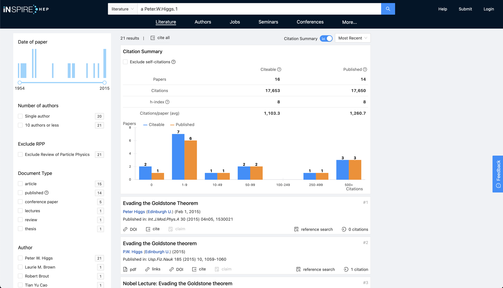

希格斯（Peter Higgs）对物理有哪些贡献？

原文首发于知乎。
诺贝尔奖得主希格斯去世，他对物理学有哪些影响深远的贡献？ - Isaac Wang的回答 - 知乎 Higgs可能是文章引用最极端的科学家。几篇奠定地位之作引用爆表，其余的几篇无人问津，总作品量不多。他的数据也经常被圈内拿来开玩笑。当然，这丝毫不会动摇Higgs在现代粒子物理学中奠基性的贡献。
Higgs的主要工作已经为人熟知，本回答下也有答主写过了优秀的科普。这里我想展开一点，说一下Higgs机制对整个粒子物理领域的深远影响。总结来说，Higgs机制不仅仅解决了标准模型下的质量问题，还直接或间接的开创了多个火爆的研究领域，撑起了现代粒子物理研究的半边天。
具体的数学基础和科普，可以参考 知乎用户@拉格朗日的忧郁 的回答。这个机制利用了势场的非零极小值，使得拉格朗日量发生自发对称性破缺，从而生成了原本没有的质量项。
具体到标准模型里面，原始动机则是费米子的质量。标准模型的规范群是 $SU(3)_C \times SU(2)_L \times U(1)_Y$ ，其中后两个是电弱理论的规范群，典型特征是左右手粒子在此规范群下的变换是不同的。由此诞生的问题是Dirac质量项 $m \bar{\psi}_L \psi_R + \rm h.c.$ 并不是规范不变的。例如，做 $SU(2)_L$ 规范变换时，此项只有 $\psi_L$ 会变，其余的不会，那么这项很显然整体上会随着 $SU(2)_L$ 变换，而不是保持不变。这就破坏了规范对称性。
上述的思维方式，是粒子物理建模最基本的方法，因为我们需要时刻保证模型的规范不变性。
但是很显然费米子需要质量。由此Higgs提出了他的自发对称性破缺机制。电弱理论中，Higgs机制假定有一个标量场Higgs同费米子相互作用。Higgs的场通过Higgs机制获得一个非零的真空期望值(vacuum expectation value, 以下简称vev)，这个真空期望值将电弱规范群由 $SU(2)_L \times U(1)_Y$ 破缺为更小的 $U(1)_{\rm em}$，也就是电磁场的规范群。这个规范群对左右手粒子有相同的变换，从而解决了质量项破坏规范不变性的问题，原本的 $SU(2)_L \times U(1)_Y$ 则不再存在，但相应的规范玻色子，也就是 $W$ 和 $Z$ ，依然存在。他们也从Higgs的vev中获得质量，并且继续和费米子作用，形成了弱相互作用。 费米子的质量同时由Higgs的vev生成。Higgs与这个粒子的相互作用强度越大，这个粒子的质量就越大，二者严格正比。
由此，Higgs的理论使得电弱理论完成了最后一环：他成功解释了弱相互作用和电磁相互作用为什么会有这样的形式，并且解释了为什么规范玻色子会有质量。可以说，没有Higgs理论，就不会有电弱统一理论。
Higgs更深远的影响则是开启了人们探索更大的规范群的思路。既然标准模型的规范群可以在低能下破缺为强相互作用+电磁相互作用（确实弱相互作用只有很高能量才能看到），那么有没有可能更高的能量上会有更大的规范群，他自发破缺为标准模型的群？
于是，这成为了超出标准模型(beyond standard model, BSM)的思想基础。
标准模型有没有可能被统一进一个更大的群？至少在我看来，这个火爆了几十年的问题，是扎根在Higgs机制之上的。所有的这些模型，都必须通过类似的机制，由标量场的非零vev引发自发对称性破缺，从而使得规范群破缺到标准模型。很典型的例如70年代就提出的初代GUT模型。
现在就更不必说，每天arXiv都可以看到大量的BSM的文章，讨论额外的规范群存在的可能性。而Higgs机制，目前似乎是唯一的从更大的规范群回到标准模型规范群的方式。因此，可以说Higgs机制允许人们开始讨论更大的对称群，同时也为这些更复杂的模型下如何生成粒子质量项提供了最好的方案。可以说，Higgs机制直接开创了这类研究领域。
需要说明的是，质量项破坏规范对称性并不是普适结论。他只是标准模型下的一个具体的二级结论。质量项和其他的相互作用项一样，存在与否需要对规范群进行具体的分析。例如在70年代末提出的左右手对称模型(parity-symmetric model)里面，规范群被定为 $SU(3)_C \times SU(2)_L \times SU(2)_R \times U(1)_X$ 。此模型提出所有的标准模型粒子都有镜像粒子，例如标准模型左手夸克在此规范群下的gauge charge为 $q=(3,2,1,1/6)$，那么就有一个相应的右手夸克，规范群为 $Q=(3,1,2,1/6)$。在这个理论下，标准模型的右手夸克 $u_R$, $d_R$, 以及电子 $e_R$ 在两个 $SU(2)$ 下都是singlet，他们的镜像粒子同样，并且二者在 $SU(3)$ 和 $U(1)$ 下的规范变换相同。具体写出来，例如右手夸克和他的镜像为 $u_R = (3,1,1,2/3)$, $U_L = (3,1,1,2/3)$ 。二者完全可以直接存在质量项 $M_u \bar{u}_R U_L$。最后所有粒子的质量，则是由Higgs机制生成的质量与此类质量项的贡献共同组成。左右对称模型是一个很经典的模型，也是Higgs机制如何帮助物理学家扩展规范群的一个经典例子。过去了几十年，最近此模型开始慢慢获得了新的关注，开始逐步有更多的人讨论通过这个模型解决一些粒子物理的未解之谜的可能性。想了解的可以去看Rabindra等人在70年代的原著，一些近年的文章也有很清晰的回顾。例如这篇文章就有对质量项和对称性破缺的详细解释。
Higgs机制本身也是非常值得研究的内容。在宇宙演化的过程中，电弱破缺是如何发生的？这个过程通常被物理学家认为是相变过程。但是这个相变真的存在吗？如果存在，是一阶相变还是二阶相变？这个相变过程有可能引发怎样的结果？这些也都是经久不衰的问题。而在BSM的大规范群中，相变可能会有更复杂的结构，也可能会有更丰富的物理意义和信号。这些也都是Higgs间接开创的研究领域。
另一个直接相关的问题是，Higgs的vev，是一个稳定的势能最低点吗？如果不是，高能标上又会发生什么？这个问题是随着Higgs机制的提出而不可避免会产生的。与此相关的研究和讨论也不会停止。例如这篇文章发表在Higgs发现后不久，通过Higgs的质量详细讨论了标准模型各类参数的取值需要限定在什么范围才能保证Higgs势能的稳定性。这篇文章则是重提parity的先锋，通过Higgs势能在很高能标处必然会不稳定这一结论，讨论各类可能的新物理模型。
Higgs同时还为暗物质模型提供了一条思路。目前很火的一类关于暗物质的思路认为暗物质属于一个单独的sector，仅仅通过一个传播子(mediator)作为和标准模型相联系的媒介。传播子有几大类，其中很重要的一类叫做Higgs portal。他的特点是与各类费米子的相互作用强度和质量成正比，和Higgs有相同的规律，尽管标准模型费米子的质量并不来源于这个新的粒子。一般来讲，在完整的模型里，Higgs portal都是通过与Higgs粒子进行混合而与标准模型产生相互作用的。这也是Higgs机制简介开辟的一条思路。可以参考这篇文章做一个简单的了解。
总而言之，Higgs机制是整个现代粒子物理的基石。他是一个模型，预言了一个具体的粒子；更是一个通用的机制，给整个现代粒子物理打开了新的世界，等待着我们去探索。